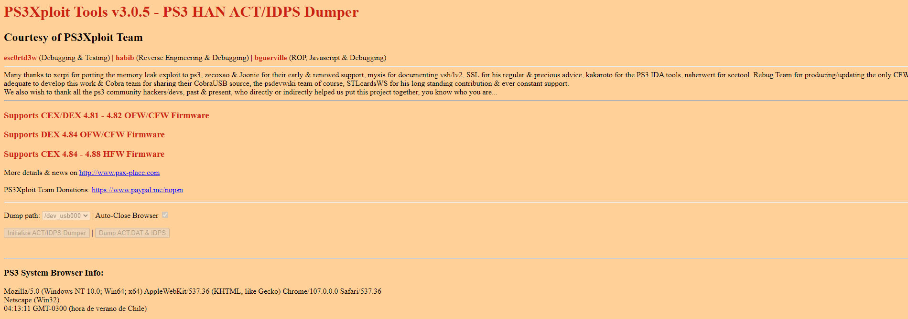

PS2 Backup IDPS-NOR
Copias de seguridad del act-id y memoria flash de nuestra consola esto es personal de cada consola PS3. id es el identificador de nuestra consola y act es la activación de nuestra consola y los dos tipos principales de memoria flash, NOR flash y NAND flash.

Para esta Guia
Requisitos para este tutorial
- USB en formato FAT32
- Conexión a Internet en nuestra PS3
Para Empezar este Tutorial IDPS
- Para realizar una copia de seguridad a nuestra IDPS (act y id)
- Podemos realizar nuestra copia
- Para esto abrimos el navegador de internet de nuestra consola
- Desde páginas WEB 
- Desde nuestra WEB WEB desde la Consola
- Dentro de nuestra consola colocaremos el link y se nos abrirá la pagina Oficial
- Y seleccionamos
Utilidades/Backup IDPSy en la página oficial - Presionamos el botón
Initialize ACT/IDPS Dumpery esperamos (si falla lo intentamos de nuevo hasta que cargue) - Y después presionamos
Dump ACT.DAT & IDPS - Y esperamos a que termine de cargar
- Una ves termina sacamos nuestro USB y lo revisamos en nuestro PC
- En nuestro equipo
- conectamos el USB y revisamos los archivos
- se nos agregara 2 archivos
act.datyidps.hex - estos archivos los guardamos en un lugar seguro y tendríamos nuestro Bachup listo
- Y estaríamos listo
Para Comenzar este Tutorial NOR
- Para realizar una copia de seguridad a nuestra NOR
- Podemos realizar nuestra copia
- Desde nuestra consola con
- Desde páginas WEB
- Desde nuestra WEB WEB desde la Consola
- Dentro de nuestra consola colocaremos el link y se nos abrirá la página Oficial
- Y seleccionamos
Utilidades/Backup Nor USBy en la página oficial - Presionamos el botón
Initialize exploitationy esperamos (si falla lo intentamos de nuevo hasta que cargue) - Y esperamos a que termine de cargar
- Una vez termina sacamos nuestro USB y lo revisamos en nuestro PC
- Y estaríamos listo
×